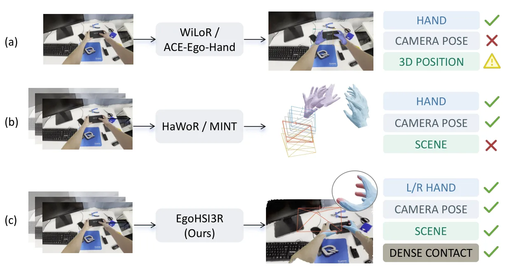
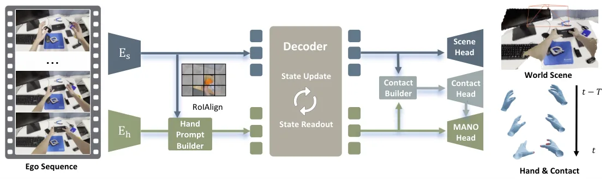
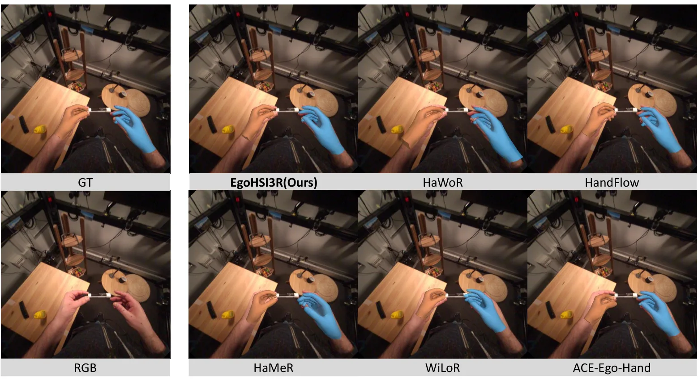
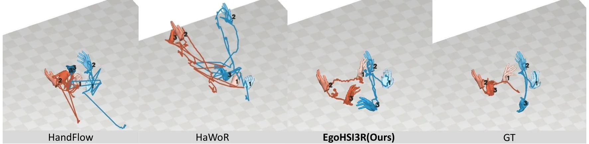
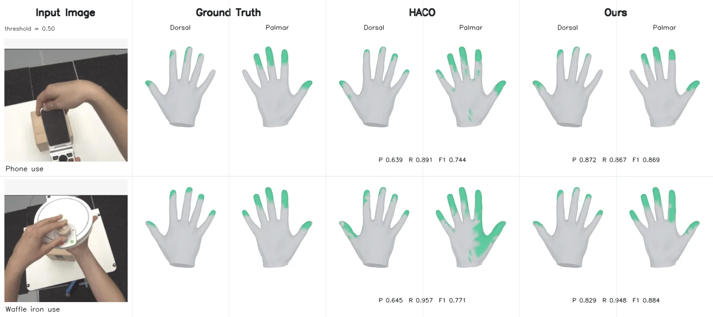

EgoHSI3R：用递推场景状态做在线 4D 手-场景交互重建
EgoHSI3R: Online 4D Hand-Scene Interaction Reconstruction from Egocentric Video
在 CUT3R 递推状态上注入 WiLoR 手部先验与局部场景上下文，再用 778 个 MANO 顶点查询场景特征预测接触并回灌手部 token。ARCTIC 世界系 W-MPJPE 108.80 mm（StableHand 124.59），H2O 深度 Abs Rel 0.027、ATE 2.573 mm，但因果推理下加速度误差与双手相对位置误差明显更差。
world-space W-MPJPE
ATE on H2O
depth Abs Rel
end-to-end FPS
作者、单位与技术谱系 · Research context
作者与单位
研究脉络
- CUT3R（Wang et al., 2025b）方法基座关系：EgoHSI3R 直接以 CUT3R 的 persistent state 作为递推场景表征，相机位姿与稠密点图头沿用其重建目标。[论文 §3.2 / §3.5]
- WiLoR（Potamias et al., 2025）方法上游关系：手部先验编码器与检测后的裁剪输入来自 WiLoR，本文在其上微调以适配双手。[论文 §3.2 / Table 5]
- EgoHSI3R（本篇推进）本篇推进关系：把 hand prompt、顶点接触查询和接触反馈接进 CUT3R 的递推循环，形成在线联合重建。[论文 §3.3–3.4 / Table 5]
合作网络
- 清华大学 → EgoHSI3R 项目页Tsinghua University → pmz-enterprise.github.io/egohsi3r-page关系：署名单位与官方项目页[EgoHSI3R 项目页]
- EgoHSI3R → CUT3REgoHSI3R → CUT3R关系：明确技术依赖（递推主干）[论文 §3.2]
- EgoHSI3R → WiLoREgoHSI3R → WiLoR关系：明确技术依赖（手部先验）[论文 §3.2 / Table 5]
作者、单位与两处技术依赖来自论文首页和 §3.2/§3.5；未发现共同署名之外的合作边，因此不写导师或实验室隶属关系。代码是否已放出需在项目页复核。
方法本质拆解 · What actually changed
是不是微调？
不是纯测试时算法。以 CUT3R 为递推主干、WiLoR 为手部先验，在六个数据集上训练；Table 5 单独验证了 WiLoR 微调，说明手部编码器权重确实改变。原文没有写冻结策略、epoch 与优化器（待核验），因此不能照搬“只训 adapter”的说法。
有没有额外约束？
没有显式几何硬约束或因子图，约束来自三处：手 token 固定绑定到手框中心的空间位置、MANO skinning 矩阵固定关节到顶点的对应、以及 1 cm 几何邻近生成的接触标签与六区域 part loss。输出被锚在 CUT3R 的共享世界系与尺度里，而不是每段单独对齐。
推理/后端到底做了什么？
每来一帧做一次 CUT3R 递推更新，流程是手检测、裁剪、WiLoR 编码、prompt 注入、联合解码、接触头，全部前馈；没有测试时优化、没有全局 BA、没有后处理平滑。接触反馈只在网络内回灌手 token，不改变已输出的历史帧。
方法本质是什么？
本质是“把双手作为可查询的 token 塞进场景递推状态，再用接触作为手-场景一致性的反馈信号”。它改变的是手 token 与场景 token 的联合表示，使手的世界位置由共享状态而不是独立估计决定；没有做的是显式物理约束、离线全局优化和未来帧平滑。
输入（单目 egocentric 帧流 + 检测框 + WiLoR 先验）→ 在 CUT3R 递推状态中注入场景条件化手 prompt → 用 MANO 顶点查询局部场景并回灌接触 → 同一世界系输出相机、点图、双手与接触。

结论与问题Conclusion & Motivation
核心结论
EgoHSI3R 把双手、相机位姿、稠密场景点图和逐顶点接触放进同一个 CUT3R 递推状态里，每来一帧只做一次递推更新，不做测试时优化。ARCTIC 上世界坐标手部误差 W-MPJPE 降到 108.80 mm，比最强基线 StableHand 的 124.59 mm 低 15.79 mm；H2O 上深度 Abs Rel 0.027、ATE 2.573 mm，优于在线 TTT3R 的 0.045 / 3.578 mm。代价是因果推理下加速度误差 16.91 m/s²、双手相对位置误差 120.77 mm 明显差于非因果方法，接触召回也只有 45.0%。因此它的价值在“共享世界坐标 + 在线联合输出”，而不是全面 SOTA。
动机与问题
现有 egocentric 手部重建分两类：camera-centric 方法只给相机系手部，world-space 方法增加相机轨迹但仍不重建场景。两类结果拼成完整 4D 场景时要靠离线优化对齐坐标、尺度与相对位置，容易出现“手悬空”或手穿场景。作者要的是只用当前及过去帧、在一个共享世界系里同时给出相机、场景、双手与接触的在线前馈模型。
方法Method
方法总览
场景侧用 CUT3R 维护 persistent state，逐帧累积几何与相机运动；手侧用在线检测器裁出手部，WiLoR 编码为 18 个 token（16 个关节姿态加 2 个形状/全局平移）。Hand Prompt Builder 用 RoIAlign 取手框附近的场景特征，经门控注入手 token，再把左右手 token 追加到 CUT3R 的相机/场景 token 上做联合注意力。Interaction-Aware Contact Builder 把 16 个关节 token 经 MANO skinning 矩阵传播到 778 个顶点，查询局部场景特征得到逐顶点接触，并把接触特征以零初始化残差回灌手 token。
关键技术细节
手 prompt 的注入写成 P=φ_mix(q+g⊙s)：q 是手先验加左右手 embedding，s 是 RoIAlign 池化的局部场景向量，g 是 sigmoid 门控；缺失手用可学习 mask token 占位，保持固定左右布局。接触头对每个 MANO 顶点做 cross-attention 后用 focal loss 监督，另按掌心加五指六个解剖区域做 part loss；接触标签由手顶点到物体表面距离不超过 1 cm 生成，预测阈值才是 0.5。训练目标是 L_rec + L_MANO + 0.3(L_focal + 0.1 L_part)，其中 MANO 项含参数、相机系关节/顶点、腕相对关节/顶点，以及 0.005 权重的门控 2D 重投影。

实验Experiments
实验设置
训练用六个 egocentric 手-物数据集：HOT3D、ARCTIC、TACO、H2O、HOI4D、DexYCB，按完整录制划分 train/val/test（如 ARCTIC 235/26/33，DexYCB 6400/320/1280 条相机流）。相机系手部在 ARCTIC、HOT3D 上按 81 帧、30 FPS 片段评 MPJPE-p、PA-p、EPE2D、GO-p、CT-p、jitter；世界系在 ARCTIC 150 帧片段上评 W-MPJPE、WA-MPJPE、AccEr、MRRPE；接触在 ARCTIC/DexYCB 的 778 顶点上评 P/R/F1；场景在 H2O 上评 Abs Rel、δ<1.25、ATE、RPE。对照包括 HaMeR、WildHands、WiLoR、EgoForce、OmniHands、HaWoR、ViDiHand、ACE-Ego-Hand，世界系还有 HaMeR-SLAM、WiLoR-SLAM、HMP-SLAM、Dyn-HaMR、StableHand。
实验数字与比较
Table 2：W-MPJPE 108.80 mm 对 StableHand 124.59 mm（低 15.79），WA-MPJPE 25.82 对 32.66 mm（低 6.84）。Table 4：H2O Abs Rel 0.027 对 TTT3R 0.045、EgoMono4D 0.049；ATE 2.573 mm 对 TTT3R 3.578 mm，略高于离线 ReViV 的 2.383 mm。Table 1：ARCTIC pp-free MPJPE-p 16.413 mm（ACE-Ego-Hand 16.615），PA-p 7.025 mm 为表中最好，但 jitter 13.938 远高于 ACE 的 2.770。Table 3：ARCTIC 接触 precision 52.152 对 HACO 43.609，F1 44.298 对 48.917（recall 45.015 对 65.181）。Table 9：端到端 10.070 FPS、6.650 GiB，HaWoR 为 7.756 FPS、8.099 GiB。
消融/失败边界
Table 5 从 base 22.916 mm MPJPE / 127.855 mm W-MPJPE 开始：微调 WiLoR 后降到 19.952 / 114.067；只加接触头、不加反馈时 MPJPE 反而升到 20.276（HOT3D 23.653 到 24.114），说明联合训练会扰动姿态优化，但 W-MPJPE 仍小降到 113.296。打开接触反馈后 MPJPE 降到 19.706、HOT3D 23.409、W-MPJPE 108.801，接触 F1 从 43.349 升到 44.298。失败边界主要来自因果性与可见性：AccEr 16.91 对 StableHand 4.67、MRRPE 120.77 对 93.71，作者归因于不能使用未来帧平滑与序列级双手轨迹校正；接触召回 45.0 也说明预测偏保守。
局限与迁移Limitations & Transfer
局限与待核验
作者明确承认：因果在线推理牺牲了时序平滑，双手相对位置在间歇遮挡下仍不稳；接触召回偏低是主要改进方向；代码在投稿时只写“preparing for public release”。我们待核验的是：论文没有给出冻结/解冻策略、训练 epoch 与优化器细节；世界系只在 ARCTIC 一个数据集评测；场景精度只在 H2O 上报告；1.47B 参数加检测器的 10 FPS 是 H200 结果，未给 Jetson 或边缘数据；1 cm 接触标签是几何邻近而非力测量。
与你研究路线的关系
这篇把“共享世界坐标”做成递推状态，而不是后处理对齐，和我们在多传感器融合里用因子图/滑窗维护全局参考系的思路同构；可迁移模块是 RoIAlign 局部上下文门控、低维关节到稠密顶点的 skinning 传播、以及零初始化接触反馈。下一步可以把它接到 VGGT/MASt3R 类几何主干上，用 IMU/GNSS 先验替代或约束 recurrent state 的尺度，做“有/无共享状态”的最小对照；评测除 ATE 外应加跨帧深度一致性与遮挡段漂移。另一个可做的实验是把接触反馈开关当作消融，验证闭环接触是否真的降低手-场景穿插率。







